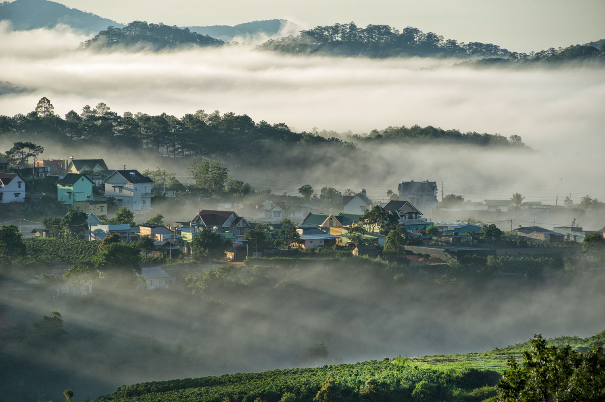

Immerse yourself in the stunning beauty and rich cultural heritage of Vietnam through our curated collection of photographs.

Landmark 81 is a 461.2-meter-tall skyscraper located in Ho Chi Minh City, Vietnam. As the tallest building in Vietnam and Southeast Asia, it features luxurious apartments, a hotel, retail spaces, restaurants, and an observation deck offering panoramic views of the city.

Hòn Yến, located in Phú Yên, Vietnam, is a picturesque island known for its stunning coral reefs, crystal-clear waters, and unique rock formations, making it a popular destination for snorkeling and sightseeing.

Ba Na Hills is a renowned resort complex famous for its lush landscapes, French village architecture, and the iconic Golden Bridge held by giant stone hands, offering visitors breathtaking views and a variety of entertainment options.

Ha Long is famous for its stunning emerald waters and thousands of limestone islands topped with rainforests. This UNESCO World Heritage site offers breathtaking scenery, cave exploration, and opportunities for cruising through the iconic Ha Long Bay, making it a must-visit destination known for its natural beauty and cultural significance.

Hoàng Su Phì is renowned for its stunning terraced rice fields that cascade down the mountainsides. This remote district offers breathtaking landscapes, rich cultural heritage, and opportunities for trekking and experiencing the traditional lifestyle of local ethnic minorities.

Hanoi Old Quarter is the historic heart of Vietnam's capital city, characterized by narrow streets lined with traditional tube houses and ancient temples. It's renowned for its bustling markets, vibrant street life, and diverse culinary scene, offering a glimpse into Hanoi's rich history and cultural heritage.

Hoi An is a charming ancient town renowned for its well-preserved architecture, lantern-lit streets, and rich cultural heritage. It's famous for its historical significance as a trading port, diverse culinary scene, and traditional crafts, making it a UNESCO World Heritage site and a favorite destination for travelers seeking a blend of history, culture, and picturesque scenery.

Vinh Hy is a scenic coastal area located in Ninh Thuan Province, Vietnam, known for its crystal-clear waters, vibrant coral reefs, and tranquil atmosphere. It's a popular destination for snorkeling, diving, and enjoying the natural beauty of Vietnam's coastline, offering a peaceful retreat away from bustling city life.